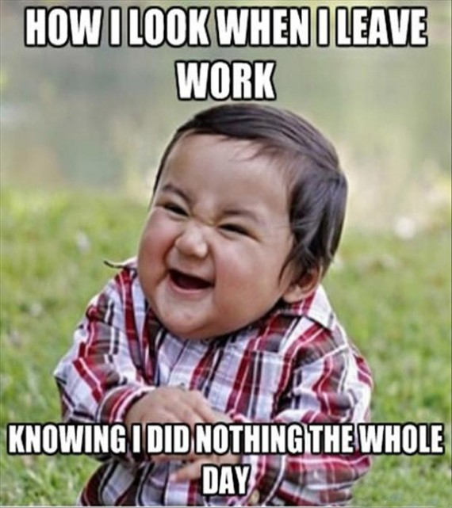

Paljudel õppuritel, kes käivad töö kõrvalt koolis, on võimalus tööl oma kodused ülesanded ära lahendada ilma, et see nende tööd või töö nende õppimist segaks. Selleks on vajalik, et keegi tööjuures õppimist mõnda aega ei segaks ja laseks keskenduda. Mõnikord on mul endalgi õnnestunud mahukad tööd tööajast ära teha...
Siis on küll selline tunne...
... kui ma saan tööajast oma koolitööd tehtud
Mõnikord on pidevat sagimist ja palju tegevust, siis on raske kodutöödele keskenduda, ja tuleb kasutusele võtta õhtune aeg.
Kõige hullem stsenaarium on selline kui tööjuures tööd teha ei saa ja koduseid ülesandeid ka teha ei saa, sellisel juhul aeg venib
ja tuleb appi sõber Delfi, mis aitab aega parajaks teha, kuid ka sellisel juhul tuleb kodutööd õhtusest ajast teha ja tekib selline ajaraiskamise tunne
kui pool päeva on tühja läinud.
Kui pea on pulki täis ja üritad midagi tähtsat teha siis on umbes nii...